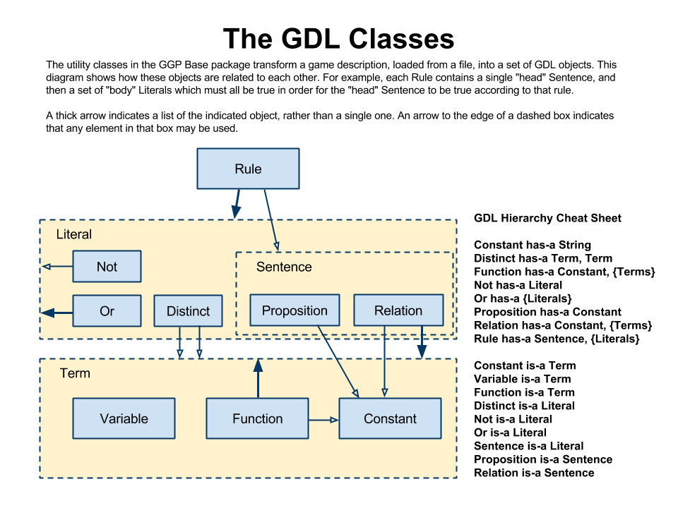
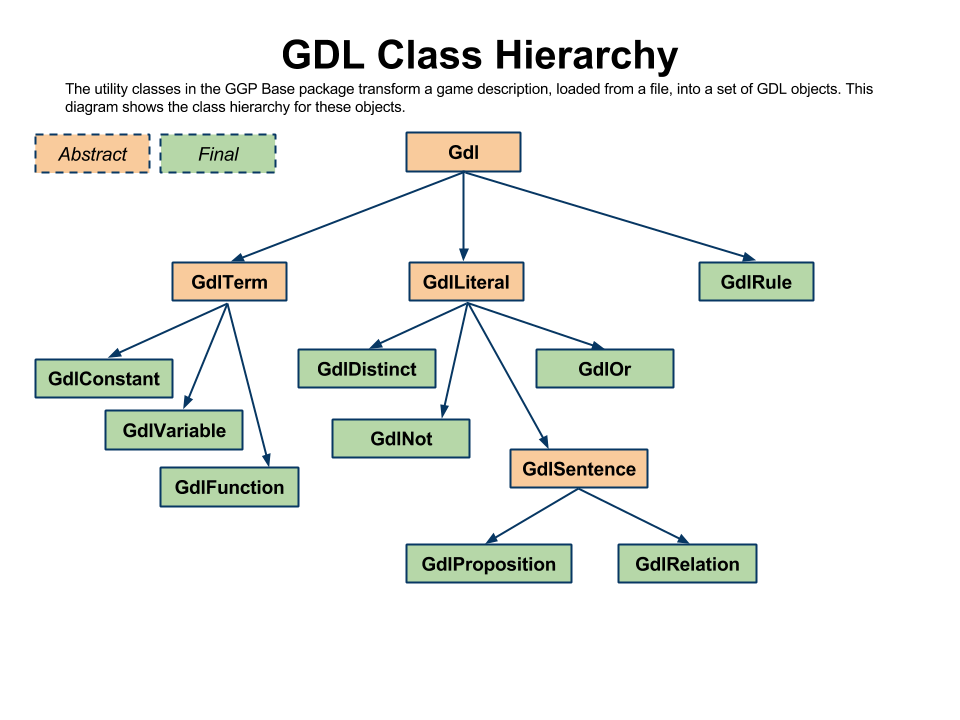

Developing Players: the GDL Class Hierarchy
GGP Base processes game rules in the following way: after being read from the rulesheet file, the rules of a game are represented as a collection of Gdl objects. Everything that follows (building a state machine, determining roles, analyzing the game) uses this collection of Gdl objects as the authoritative rules of the game.
These diagrams show the relationship between the Gdl classes in GGP Base.
 